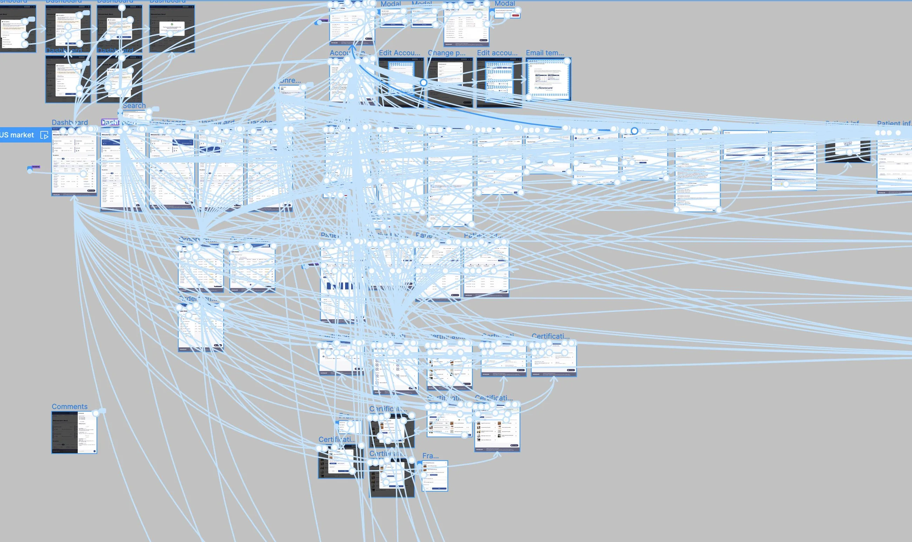
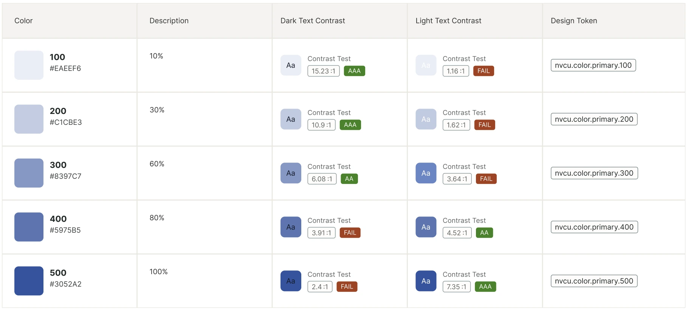
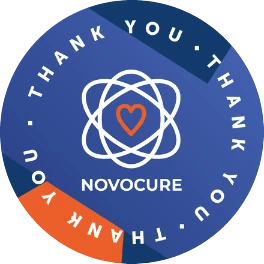
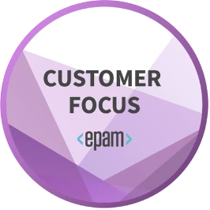

Novocure · Healthcare, via EPAM
Restarting an oncology HCP portal from zero — three markets, WCAG AA, +21% sales
A previous vendor had walked away mid-build, leaving clinics with no working way to order Optune, renew a prescription, or track how a patient was using the device.
Sales depended on that workflow being frictionless, so the rebuild ran against alpha and beta deadlines while requirements still changed near-daily. The portal had to serve the US, Germany and France — different personas, clinical practices, record conventions and legal constraints — and, given the treatment context, accessibility was not negotiable: every screen had to meet WCAG Level AA. I joined as Senior Experience Designer on the EPAM engagement and took over design leadership mid-project when the lead designer left.
Three markets meant three design problems — not one design translated three times.
Who uses the portal, how a clinic practises, how dates and records are written, and what the law permits all differ by market. I pushed those differences down into the components instead of solving them screen by screen — language, date handling and field behaviour resolved once in the library — so a market-specific rule never turned into a market-specific screen to maintain.

Restarted from zero: 350+ requirements became 400+ prototype screens, wired into one clickable prototype.
A folder of screens would not have survived requirements that moved every day. One connected prototype — every market, every state, every dead end — let the team test it, demo it and re-scope from it without losing the thread, and it became the artefact stakeholders reviewed instead of a specification nobody could picture.

An architecture built around how clinic staff actually work — ordering, renewing, chasing documents, coordinating a team.
I mapped the end-to-end journey first, from referral and certification through the first forty days of therapy and beyond, marking every point where someone is left waiting on someone else. The order and renewal flows were then designed against that map: what expires and when, what the clinic has to upload, where insurance and authorization can block a start, and what the system should simply handle on its own.
Accessibility designed into the first component rather than retrofitted — every colour token shipped with its contrast evidence.
Contrast, focus order, semantic structure and assistive-technology support were settled at component level, which is what kept WCAG AA intact while requirements churned. Each token carried its measured ratio against dark and light text, so choosing a colour told you immediately where it was allowed — accessibility became a property of the system instead of a review someone had to remember to run.

One library as the single source of truth across all three markets — the trade-off that made shipping at volume possible.
Every variant, state and message pattern was defined once and tokenised, so a change landed everywhere at once instead of being re-decided per market. It also left the team a foundation it could maintain after the engagement ended, which was worth more than any individual screen.

Alignment across three markets doesn't happen over email — so I ran the sessions on site.
I presented the prototypes in person at Novocure's office at D4 outside Lucerne and worked through them with Swiss and German stakeholders. Feedback that had been costing a review cycle each got resolved while everyone was still in the room: approvals came the same day or the next, and team velocity rose by 30%. It was also the fastest way to settle market-specific questions — you learn what a German clinic actually needs from the people who work with one.
Also part of the work
- Stepped into design leadership mid-project — set up the processes the team had been missing, ran the design demos, and carried stakeholder communication and deadlines through the churn.
- Designed the coordination surfaces around the clinical work — open items, document uploads, usage reporting and team access — so a clinic's staff could work one shared queue instead of chasing each other by email.
The signal that mattered most wasn't a number — it was what came back to the design team.
One recognition is a Novocure thank-you addressed to the whole design team; the other is EPAM's own Customer Focus award, given for how the engagement was run rather than for what it shipped.
-

“Dear Design Team! Thank you for all your efforts and contributions. Your artifacts are breathtaking, keep going!”
Novocure · Thank You
-

“Thank you for acting proactively, establishing trustful relationships, and demonstrating a strong commitment to the Customer's success.”
EPAM · Customer Focus
The result: every MVP alpha and beta requirement delivered on time, +21% sales in Q4 2024, and 87/100 on the System Usability Scale.
A stalled, vendor-abandoned project became a maintainable foundation across three markets, and the team kept the processes and the design library it had never had. Looking back, I'd formalise accessibility annotations into the library from day one — we retrofitted documentation that should have been born with the components.
UX/UI design · information architecture · WCAG AA accessibility · multi-market design · design systems and libraries · prototyping · stakeholder workshops · design leadership · Figma
Let's talk
Open to senior product-design roles across Poland — hybrid or remote, B2B or employment contract.